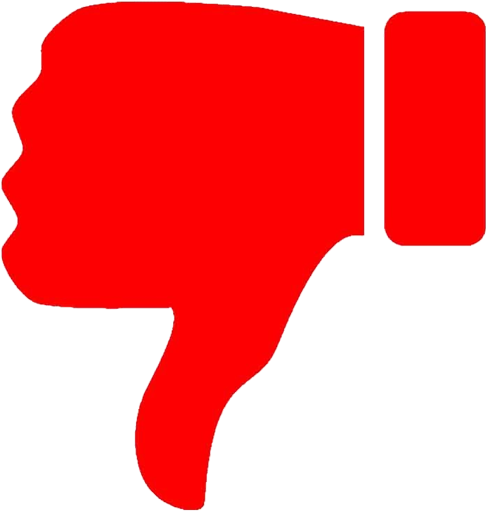

El bitcoin ofrece un amplio mundo de beneficios dándole un buen uso y conociendo del tema, eso y otros factores definirán su éxito en la población de un país. Lo peculiar de Bitcoins es que los usuarios pueden crearlos ellos mismos en la PC resolviendo fórmulas matemáticas extremadamente complejas.
Como cualquier tema, cuenta con sus pros y contras. Algunos de ellos pueden ser:
VENTAJAS
El bitcoin en El Salvador es una gran oportunidad, que contiene riesgos y volatilidad, no obstante, podemos destacar las siguientes ventajas que traería si se implementara de manera correcta:
- Créditos revolventes usando bitcoin como colateral.
- Facilitación de infraestructura de pagos locales e internacionales de diversas fuentes.
- Reducción de costos de transacción en envío de remesas familiares.
- Adopción de nuevas tecnologías en segmentos de la población.
- Defensa ante la inflación.
- Alto anonimato y privacidad ante los movimientos.
- Los pagos quedan registrados de forma pública.
- Acceso 24/7.
- Es independiente de agentes autoritarios.
DESVENTAJAS
Algunos economistas mencionan que el implemento de bitcoin en la economía es malo para la estabilidad del país, debido a temas como: su falta de regulación, manipulación, estafas, consecuencias ambientales, riesgos fiscales, sanciones económicas para el país, desordenes monetarios, por mencionar algunas. Aunque sigue siendo un tema relativamente nuevo, no hay verdaderos expertos al día de hoy y sobran opiniones. No nos queda nada más que esperar y ver cómo continúa esta historia que, de momento, genera altas expectativas. Algunas desventajas que la criptomoneda son:
- Su volatilidad.
- Puede bajar la recaudación fiscal según proporción entre formalidad e informalidad.
- Posibles riesgos respecto del lavado de activos, aunque ya sucede en fuertes cantidades de dólares.
- El sistema financiero tradicional sería afectado por la reducción en transacción de remesas.
- Las estafas a personas que desconozcan de la plataforma serían casos comunes.
- No brinda la suficiente información para conocer del tema o su manejo.
- Dificultad de encontrar compradores y vendedores en el mercado de Bitcoins al no haber agentes intermediarios.
- No se pueden realizar reembolsos.
- Hay uso de la criptomoneda en la Deep Web.
